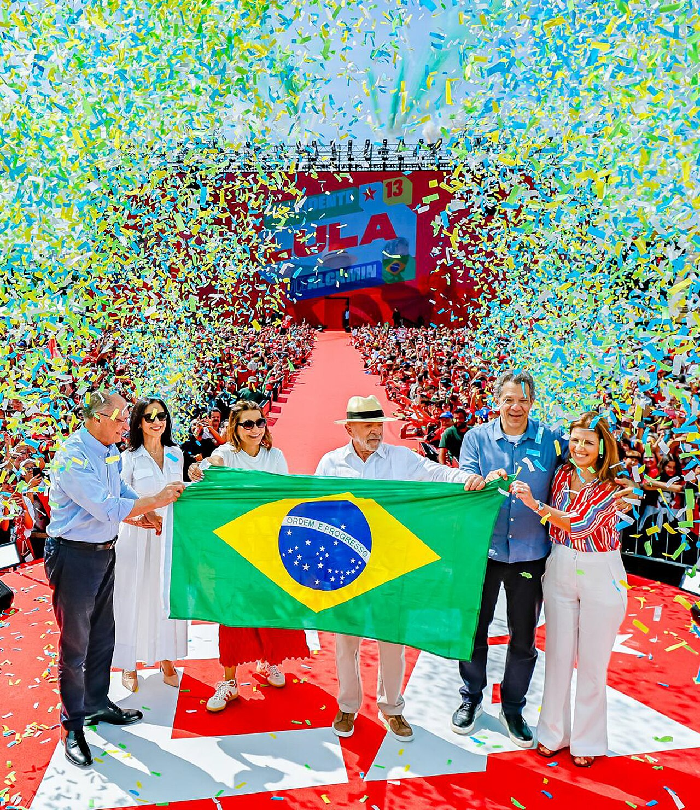

2Trump
USA → BRASIL
50 %
de arancel · “para defender a Bolsonaro”
Lula se envolvió en la bandera

Jair Bolsonaro · padre de Flávio
27 años
condenado por intento de golpe (STF, 2025)
B ✓
Arancel anunciado 9/7/2025, citando la “persecución” a Bolsonaro (Poder360). Foto: Lula Oficial.